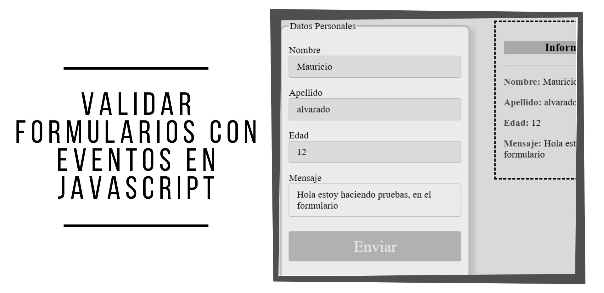

Proyecto11
Some quick example text to build on the card title and make up the bulk of the card's content.
Ver ProyectoIngeniero de Sistemas con más de 7 años de experiencia en el ámbito informático como: Desarrollador Junior, Analista de sistemas / Analista Funcional, Soporte técnico, Consultor técnico.
Actualmente estoy en busca de desafíos en el Diseño de Software y orientar mi carrera profesional para poder continuar aprendiendo nuevas metodologías como aplicando mis conocimientos actuales en paralelo a mi experiencia, por lo que de forma proactiva me he dedicado a ampliar mis conocimientos a través de certificaciones y cursos. Leér másConsultor TI y Desarrollador / Enseca Technology C.A - Venezuela
OCTUBRE DE 2012 – SEPTIEMBRE DE 2019
Tareas realizadas: Consultoría y desarrollo de Sistemas bajo los lenguajes Java, Framework Laravel, con integración con base de datos en SQL server 2008, 2012 y ACCESS para el mantenimiento y mejoras de aplicaciones de control de acceso y equipos biométricos comercializados por la empresa. Análisis, diagramación y documentación en Bizagi, StarUML, Lucidchart, Microsoft Visio, Microsoft Project. Análisis de sistemas y soporte a las aplicaciones administrativas y servidores en Windows Server llevando a cabo mediante la administración del dominio y acceso de usuarios a las aplicaciones.
Help Desk Support Specialist / Eol.com - Venezuela
FEBRERO DE 2010 – SEPTIEMBRE DE 2012
Tareas realizadas: Me desempeñé como soporte técnico a equipos de computación de la empresa, en mantención de servidores Windows Server 2008 y 2012, Bases de datos Mysql, primera línea de soporte de aplicaciones y trabajo en conjunto con desarrolladores, QA de aplicaciones en servidores virtuales a través de VirtualBox, VMWare y Hyper-V. Encargado de pasos a producción de mejoras y soluciones de la plataforma de trabajo de la compañía de forma ordenada y coordinada.
html5 - css3

bootstrap 4
java

php
git
mysql

sql server
Some quick example text to build on the card title and make up the bulk of the card's content.
Ver ProyectoSome quick example text to build on the card title and make up the bulk of the card's content.
Ver Proyecto
Some quick example text to build on the card title and make up the bulk of the card's content.
Ver Proyecto
Some quick example text to build on the card title and make up the bulk of the card's content.
Ver Proyecto